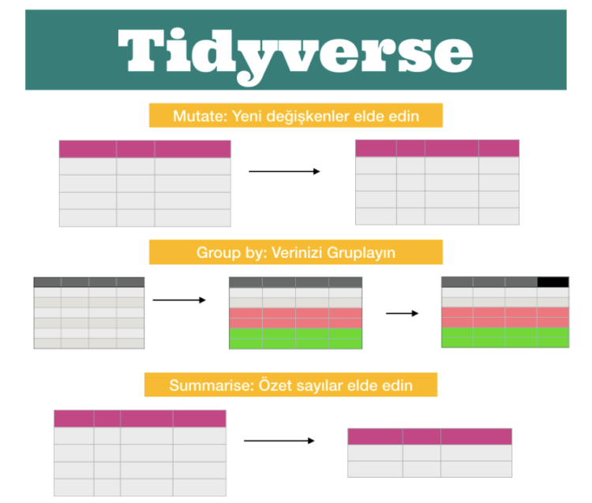

Tidyverse
mutate(), group_by() ve summarise() fonksiyonlarını, aynı veri setiyle nasıl kullanacağımızı anlatacağım.

Veri setimizi tekrar çalışma alanımıza yükleyip, değişkenleri hatırlamak için ilk 3 satırına bir bakalım:
options(jupyter.rich_display = FALSE)
suppressPackageStartupMessages(library(tidyverse))
filmler <- read.csv(file = "movies.csv" , header = TRUE, sep = ",")
head(filmler, n = 3)
İlk fonksiyonumuz mutate(), adı üzerinde bir şeyleri değiştirmek, dönüştürmek için kullanacağız. Mutate fonksiyonu her değer için bir dönüşüm yapıyor ve bunu sizin isimlendireceğiniz yeni bir değişkene atıyor. Örneğin veri setimizde duration (filmlerin süresi) dakika olarak verilmiş ve bunu saat olarak da görmek istediğimizi düşünelim. duration_hour diye isimlendirdiğimiz yeni bir değişken oluşturup, dakikayı saate çeviriyoruz ve virgülden sonra 2 basamağı alacak şekilde gösteriyoruz. Oluşturduğum duration_hour değişkeni de veri setimin son değişkeni olacak şekilde ekleniyor:
filmler_sure <- filmler %>%
mutate(duration_hour = round(duration/60, digits = 2))
head(filmler_sure, n = 3)
Burada önceki yazımda bahsettiğim zincir (pipe) operatörü ve select fonksiyonunu da tekrar kullanalım ve sadece movie_title, duration ve duration_hour değişkenlerini seçelim ve ilk 5 gözlemi inceleyelim:
filmler_sure %>%
select(movie_title, duration, duration_hour) %>%
head(n=5)
Mutate fonksiyonunun başka güzelliklerine de değinmek istiyorum. Örneğin veri setimizdeki budget ve gross değişkenlerinin para ile ilgili değişkenler olduğunu, yanlarına ekleyeceğim $ sembolü ile özellikle vurgulamak istiyorum. mutate_if (*) fonksiyonu “değişkenlerim nümerik ise” diye kontrol edecek ve sonrasında scales paketinin dollar_format fonksiyonu ile eğer nümerik ise başlarına $ sembolü koymasını sağlayacak:
filmler %>%
select(movie_title, director_name, budget, gross) %>%
mutate_if(~is.numeric(.), scales::dollar_format(prefix = "$")) %>%
head()
İkinci ve üçüncü fonksiyonlarımız ise group_by ve summarise. Belirlediğimiz değişkene/değişkenlere göre gruplama yapmak istiyorsak group_by kullanıyoruz. summarise (veya summarize) ise bize görmek istediğimiz özet bir sayıyı veriyor. Özet sayı, değişkenin ortalama, standard sapma, varyans, minimum, maksimum vb değerleri olabilir.
Bu iki fonksiyonu beraber göstermek istiyorum. İlk olarak yönetmenlerin filmlerinin IMDB puanlarının ortalamasına bakmak ve bunu ortalama puanı yüksek olandan düşük olana doğru sıralamak istiyorsak:
filmler %>% group_by(director_name) %>%
summarise(ortalama_puan = round(mean(imdb_score), digits = 2)) %>%
arrange(desc(ortalama_puan)) %>% head()
Burada ilk önce hangi değişkene göre gruplamak istiyorsak onu group_by fonksiyonunun içine yazdık ve ardından summarise fonksiyonu ile görmek istediğimiz ortalama_puan değişkenini mean fonksiyonu ile hesapladık.
Başka bir örnek türetelim. Yıllara göre gruplayıp, en yüksek IMDB puanına ve film süresine bakalım:
filmler %>% group_by(title_year) %>%
summarise(max_puan = max(imdb_score), max_sure = max(duration)) %>%
arrange(desc(max_puan)) %>%
head()
Bu örnek bize 1994 yılında gösterimdeki filmlerin en yüksek puanının 9.3 ve en yüksek süresinin 212 dakika olduğunu söylüyor. Ama bu iki değerin aynı filme ait olduğu anlamına gelmiyor, buraya dikkat edelim. Bunların hangi filmlere ait olduklarını bilmek istiyorsak da şöyle bir şey deneyebiliriz:
filmler %>%
filter(title_year == 1994, imdb_score == 9.3 | duration == 212)
Son olarak veri setimizde film türlerine göre kaçar film olduğuna bakalım:
filmler %>% group_by(genres) %>%
summarise(film_sayisi = n_distinct(movie_title)) %>%
arrange(desc(film_sayisi)) %>% head()
Burada bazı filmler birden fazla yazıldığı için (benzeri olmayan film sayısı 3606) n_distinct fonksiyonunu kullandık. Hangi filmlerin birden fazla yazıldığına bakmak istiyorsak da aşağıdaki gibi inceleyebiliriz:
filmler %>% group_by(movie_title) %>%
summarize(n = n()) %>%
filter(n > 1) %>%
arrange(desc(n)) %>% head()
Bir sonraki yazımda ggplot2 paketiyle bu veriler üzerinden görselleştirme örnekleri yapacağım.
(*) mutate_at, mutate_if, mutate_all, summarise_at, summarise_if, summarise_all fonksiyonlarına mutlaka bakmanızı tavsiye ederim.